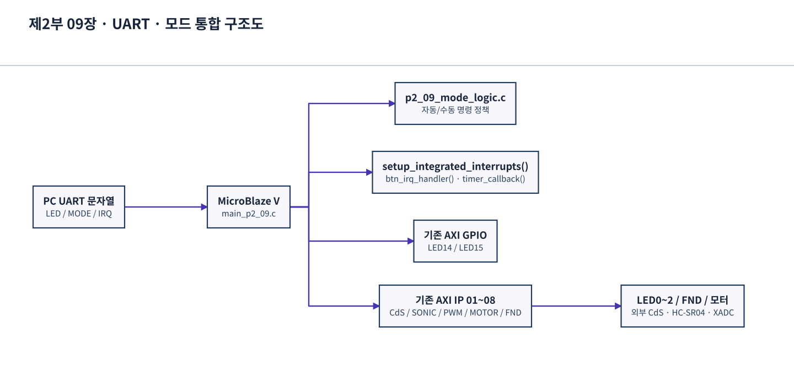

00이 장의 목표
MODE AUTO / MODE MANUAL → 버튼·Timer IRQ 상태 조회 → LED14·15 표시 → 기존 01~08장 동작 회귀
- Basys3 XC7A35T
- Vivado/Vitis 2024.2
- AXI Timer + GPIO + INTC
- UART ASCII 문자열
01시스템 목표·완성 동작
개요목표: 제2부 08장까지의 MicroBlaze V 사용자 AXI IP·UART 통신·버튼 인터럽트·ADC/PWM·모터 안전 제어를 유지하고, MODE AUTO/MODE MANUAL 문자열 명령과 LED14/15 진단 기능을 통합한다.

| 명령 | 기대 동작 |
|---|---|
MODE AUTO | CdS 자동 조명 ON, 초음파 연속 ON, 모터 STOP 요청, FND 거리 모드 |
MODE MANUAL | CdS 자동 조명 OFF, 초음파 안전 감시 유지, FND 이전 모드 복귀 |
MODE STATUS | 운전 모드와 CdS/SONIC 설정, 모터 요청 상태 |
IRQ STATUS | 타이머·8개 버튼 이벤트 카운터, COALESCED |
STATUS | 01~08장 기존 필드 + CTRL_MODE/IRQ_TIMER/LED14/LED15 |
MOTOR FWD | MANUAL에서 기존 안전 조건 검사; AUTO에서는 거부 |
AUTO OFF, SONIC OFF | AUTO에서는 거부; MANUAL에서는 기존 명령으로 처리 |
02자동/수동 제어권 분리
설계| 항목 | MODE AUTO | MODE MANUAL |
|---|---|---|
| CdS 게이트 | ON: 어두울 때 PWM 출력 | OFF: PWM 수동 출력; 수동 AUTO ON 명령은 기존대로 사용 가능 |
| 초음파 연속 측정 | ON | 끄지 않고 유지. 필요 시 SONIC OFF를 별도 명령으로 수행 |
| 모터 | STOP 요청만 발행, 자동 재기동 없음 | MOTOR FWD/REV는 기존 RTL 안전 상태를 확인한 경우에만 허용 |
| FND | DIST cm 표시; 새 샘플 전 소등 | VALUE/EVENTS 복귀 |
| LED14 | UART 완료 행 수신 때 상태 반전 | 동일 |
| LED15 | Timer IRQ 0.5초마다 상태 반전(실제 클록 확인) | 동일 |
motor_controller가 담당합니다. Motor ENA 실제 OFF는 MOTOR STATUS로 확인해야 합니다.03실제 함수명 기준 C 플로우차트
구조
poll_uart() → handle_line() → p2_09_parse_command(). 명령이 일치하면 enter_auto_mode(), enter_manual_mode() 또는 print_irq_status() 실행. 그 외 명령은 기존 파서에 전달한다.
0404. 08장 프로젝트 소스·기능 확인
따라하기09장 새 설계의 출발점을 확보한다.
Vivado → File → Open Project
08장 실습 후 생성된 $HOME/soc/hw/soc_ip_design_08/soc_ip_design_08.xpr를 연다.
BD와 01~08장 IP, XADC, Timer, UART, 기존 LED14/15용 AXI GPIO가 있는지 확인.
동작 원리: 이전 장의 재현된 하드웨어 기준선을 복제한다.
오류 점검: 08장 프로젝트가 아직 없으면 이 절차는 진행하지 않고 해당 장부터 실습.
0505. 09장 독립 XPR 생성
따라하기08장 성공 결과를 유지한다.
File → Project → Save As
이름 soc_ip_design_09, 폴더 $HOME/soc/hw/에서 새 XPR을 생성한다.
soc_ip_design_09.xpr와 BD/Top을 신규 프로젝트에서 확인.
동작 원리: 프로젝트별 차등 기능 실습으로 이전 성공 결과를 보존한다.
오류 점검: 이전 장 폴더 절대경로 참조가 남아 있으면 수정 전에 확인.
06기존 Block Design 구조 대조
따라하기09장은 새 사용자 AXI IP를 만들지 않는다.
Flow Navigator → IP INTEGRATOR → Open Block Design
soc11_integration.bd에서 MicroBlaze V, AXI GPIO, AXI UART Lite, AXI Timer, AXI INTC, P2-03 Buttons IP를 확인한다.
기존 블록들이 누락되지 않고 연결된 상태.
동작 원리: UART는 Polling, 버튼/Timer만 인터럽트로 관리한다.
오류 점검: AXI Timer가 없으면 08장 구성부터 확인; 임의 중복 추가 금지.
07버튼과 Timer IRQ의 AXI INTC 연결
따라하기두 인터럽트가 각각 CPU로 전달되어야 한다.
BD → AXI Interrupt Controller · xlconcat 계층
버튼 IP IRQ와 AXI Timer interrupt가 AXI INTC의 서로 다른 입력에 연결되었는지 확인한다. 없으면 두 개를 받아들이는 xlconcat 구조로 확장한다.
버튼과 타이머가 INTC 입력에서 서로 다른 슬롯으로 연결됨.
동작 원리: 둘을 한 IRQ ID에 중복 등록하면 한 콜백이 호출되지 않을 수 있다.
오류 점검: xlconcat width·입력 bit 순서, INT CEA/interrupt 출력과 CPU INTERRUPT 경로 확인.
08Clock·Reset 기준 확인
따라하기Timer의 0.5초를 실제 클록으로 환산한다.
BD → AXI Timer / Clock Wizard 연결
AXI Timer의 s_axi_aclk 클록 주파수 및 aresetn 연결을 확인하여 기록한다.
실제 Timer 클록이 확인되고 기존 시스템 Reset이 유지됨.
동작 원리: C의 P2_09_TIMER_CLK_HZ는 이 주파수를 입력받는다. 100MHz는 가정값이다.
오류 점검: 서로 다른 Clock Domain이면 CDC/Reset을 별도 확인.
09BD Validate 및 주소 맵 확인
따라하기기존 사용자 IP와 AXI Timer/GPIO의 주소 충돌을 방지한다.
BD → Validate Design / Address Editor
Validate 실행 후 GPIO·Timer·P2-01~08 IP의 Base Address 및 IRQ ID를 표로 기록한다.
주소 중복 없고 기존 IP 경로 유지; Validate가 오류 없이 완료되는지 확인.
동작 원리: C의 모든 BASEADDR은 실제 XSA/BSP와 1:1 대응해야 한다.
오류 점검: 기존 프로젝트와 달라진 주소가 있으면 XSA와 C 상수를 모두 갱신.
10Top 사용자 배선 유지
따라하기기능 로직을 Top에 추가하지 않는다.
Sources → Design Sources → basys3_soc11_top
rtl/basys3_soc11_top_p2_08.v를 09장 복제본에서 유지한다. 변경 전후 LED0/1/2·LED14/15, CdS, SONIC, FND, Motor, XADC 연결을 비교한다.
09장 새 Top 기능 로직 없음; GPIO led[15:3] 매핑 유지.
동작 원리: 09장은 IRQ/모드 정책 중심의 C 단계이므로 Top의 기능 회로를 새로 만들지 않는다.
오류 점검: Wrapper 포트와 실제 user Top 포트를 직접 대조.
11XDC 보존·보드 핀 확인
따라하기기존 외부 장치 배선과 MCU 핀 할당을 보존한다.
Sources → Constraints / Master XDC
기존 XDC의 버튼, JA CdS/SONIC, JB 모터, JXADC, 내장 FND와 LED0~15 핀 제약을 검토한다.
중복 핀·IOSTANDARD·클록 제약 충돌이 없음.
동작 원리: 모터 외부 전원, HC-SR04 ECHO 5→3.3V, XADC 0~1V 안전 기준은 그대로 유지한다.
오류 점검: 전압 미확인·핀 충돌 시 실제 장치 연결 금지.
12HDL Wrapper 갱신 및 프로젝트 Top 확인
따라하기Vivado 자동 생성 산출물의 실제 포트가 기준이다.
BD → Generate Output Products → Create HDL Wrapper
필요한 경우 재생성하고 Vivado 관리 Wrapper를 사용한다. Sources에서 basys3_soc11_top을 Set as Top으로 지정한다.
Top→Wrapper→BD 계층과 포트 이름 일치.
동작 원리: 자동 생성 Wrapper를 수작업으로 수정하지 않는다.
오류 점검: Generate 실패 또는 Unknown port는 BD 외부 포트를 먼저 확인.
13Vivado 합성·타이밍 확인
따라하기09장 인터럽트 연결을 하드웨어 수준에서 확인한다.
Run Synthesis → Run Implementation → Timing Summary
DRC·Clock·Reset·WNS/TNS·Critical Warning을 기록하고 Output Generate Bitstream을 실행한다.
합성·구현·Bitstream과 타이밍 기준을 확인.
오류 점검: 기존 클록 덮어쓰기 Critical Warning이 재발하면 원인을 해소.
14XSA 내보내기
따라하기Vitis가 새 IRQ 구성과 AXI 주소를 인식하도록 한다.
File → Export → Export Hardware
Bitstream 포함 여부를 확인하고 새 09장 XSA를 내보낸다.
09장 프로젝트에 대응하는 XSA가 생성됨.
동작 원리: 기존 08장 XSA를 그대로 쓰면 새 IRQ 배치가 반영되지 않을 수 있다.
오류 점검: Vitis Platform이 XSA를 갱신하지 않았는지 확인.
15Vitis Platform 갱신
따라하기09장 BSP를 실제 하드웨어에 일치시킨다.
Vitis Unified IDE 2024.2 → Platform Component
09장 XSA 기반 Platform을 지정하고 Build한다. 사용한 Domain이 standalone_microblaze_riscv_0 계열인지 확인한다.
BSP xparameters.h에서 GPIO/Timer/Button IRQ/주소 매크로 확인.
동작 원리: SDT와 Classic 분기는 BSP 실제 정의에 맞추어 빌드된다.
오류 점검: Platform과 Application의 XSA/ELF 불일치 확인.
1616. 09장 전체 C 소스 추가
따라하기기존 08장 메인을 복사하고 기능만 확장한다.
Vitis Explorer → Application → src
main_p2_09.c, p2_09_mode_logic.c/.h와 03~08장 p2_XX_logic.c/.h를 추가한다. main_p2_08.c는 빌드에서 제외한다.
main()이 정확히 한 개이고 모든 로직 모듈이 컴파일 대상.
동작 원리: 중복 main()/중복 심벌 없이 링킹한다.
오류 점검: 참고용 reference 메인은 Vitis 빌드에서 제외.
17AXI 주소와 IRQ ID 입력
따라하기임의 주소로 FPGA를 접근하지 않는다.
Vitis → BSP xparameters.h / C 빌드 설정
P2_01~08 BASEADDR, P2_03_BTN_INTR_ID/PARENT, P2_09_TIMER_CLK_HZ와 SDT GPIO/Timer Base 또는 Classic Device ID·IRQ ID를 실제 값으로 정의한다.
#error 사전 차단이 해제되고 각 주소가 유일함.
동작 원리: 예제 모의 주소(0x43C...)는 실물 주소가 아니며 복사 사용 금지.
오류 점검: 값이 없는 경우 C가 의도적으로 컴파일을 중단한다.
18C 코드 컴파일·링크
따라하기모든 09장 함수 참조와 BSP API 정합성을 확인한다.
Vitis → Application → Build
실제 09장 XSA 기반 BSP에서 main과 보조 C 모듈을 컴파일하고 ELF를 생성한다.
컴파일 오류·링크 오류 없는 ELF 생성(실습 때 확인).
동작 원리: 호스트 모의 구문 검사는 실제 BSP 빌드의 대체물이 아니다.
오류 점검: xinterrupt_wrap.h, xgpio.h, xtmrctr.h 및 API 선언 확인.
19터미널과 Basys3 다운로드
따라하기실제 UART 문자열 명령을 전달한다.
Vitis → Debug / Program Device · moserial/minicom
Bitstream+ELF 다운로드 후 PC UART 115200, 8N1, Enter 전송으로 터미널을 준비한다.
P2-09: UART/IRQ + MODE... 시작 메시지 수신.
동작 원리: UART 1회 명령 수신과 Timer IRQ는 별개 동작이다.
오류 점검: 포트 점유/권한, Baud/CRLF, ELF/Bitstream 세트 확인.
20MODE MANUAL 기본 상태
따라하기실수로 자동 조명/모터를 가동하지 않도록 한다.
UART 터미널
MODE STATUS 및 STATUS 입력 후 초기 모드를 확인한다.
MODE=MANUAL 및 CTRL_MODE=MANUAL 예상.
동작 원리: Reset 기본 상태는 수동, PWM OFF, SONIC Auto OFF, 모터 STOP 요청이다.
오류 점검: 모터 상태는 MOTOR STATUS로 실제 EN을 별도로 확인.
21MODE AUTO 전환·센서 확인
따라하기조도 게이트와 초음파 감시를 동시에 활성화한다.
UART 터미널
MODE AUTO → MODE STATUS → CDS READ → SONIC READ 순서로 입력한다.
CDS_AUTO=1, SONIC_AUTO=1, FND DIST; 모터 STOP 요청 메시지.
동작 원리: CdS 입력은 디지털 명암만 구분하며 PWM Duty 값은 유지한다.
오류 점검: 새 SONIC 완료 전 FND는 소등; FND 0000이 오류 거리처럼 표시되면 실패.
22AUTO 중 위험 명령 차단
따라하기모드 정책이 기존 RTL 안전을 우회하지 않도록 한다.
UART 터미널
MOTOR FWD, MOTOR REV, AUTO OFF, SONIC OFF를 AUTO 상태에서 차례로 전송한다.
각 명령에 BLOCKED: MODE AUTO safety 메시지.
동작 원리: CPU 제어 정책에서 모터 기동 및 핵심 센서 해제를 막는다.
오류 점검: 모터 안전 하드웨어는 별도로 독립 확인 필요.
23IRQ STATUS 버튼 시험
따라하기기존 03장 버튼 단·장 누름 이벤트가 유지되는지 확인한다.
Basys3 BTNU/BTND/BTNL/BTNR + UART
버튼을 짧게/5초 이상 누르고 IRQ STATUS로 8개 이벤트 카운트를 확인한다.
각 버튼/눌림 종류에 대응하는 카운터가 증가하고 COALESCED을 조회.
동작 원리: IRQ 처리 시간보다 반복이 빠르면 이벤트 비트맵은 동일 사건을 합칠 수 있다.
오류 점검: BTN ID/IRQ 연결·W1C Pending·Interrupt Enable 확인.
24Timer IRQ와 LED15 시험
따라하기타이머 IRQ의 주기적 동작을 확인한다.
Basys3 LED15 · UART IRQ STATUS
IRQ STATUS를 약 2초 간격으로 여러 번 입력하고 LED15를 관찰한다.
실제 Timer 클록이 100MHz이면 약 0.5초마다 LED15 상태 반전 및 IRQ TIMER 증가.
동작 원리: ISR은 카운트만 갱신하고 LED 출력은 메인 루프에서 처리한다.
오류 점검: LED15 미동작이면 Timer_CLK_HZ·INTC 소스 연결·IRQ ID·Reset·Timer 옵션 확인.
25UART LED14 활동 시험
따라하기명령 수신과 타이머 표시가 다른 비트임을 확인한다.
Basys3 LED14 · UART
MODE STATUS를 Enter로 반복 입력하고 LED14의 상태 반전을 확인한다.
완료된 비어있지 않은 한 줄마다 LED14 상태 토글; LED15는 타이머 단독 표시.
동작 원리: UART LED14는 이전 단일 문자 1/0 제어 대신 이번 장에서 완료 명령의 활동 토글 표시로 정의한다.
오류 점검: CRLF 두 번째 종결자에서는 LED14 토글되지 않음.
26MANUAL 복귀·기존 명령 회귀
따라하기자동 모드 기능을 종료하고 이전 장을 보존한다.
UART 터미널
MODE MANUAL → PWM 50 → DISP 0050 → ADC READ → STATUS 순서로 입력한다.
CDS AUTO OFF, SONIC 안전 감시 유지, FND VALUE 0050, 이전 명령 정상 파싱.
동작 원리: MANUAL 복귀는 모터 재기동을 뜻하지 않는다.
오류 점검: AUTO OFF/SONIC OFF/ADC PWM의 결과를 기존 08장 계약과 비교.
27기능·안전 통합 회귀
따라하기01~08장의 통합 기능을 확인한다.
UART/보드/오실로스코프
LED0, PWM LED1, SONIC LED2, FND, 버튼, 모터 안전 정지, XADC, LED14, LED15를 각자 확인한다.
동작 원리: 모든 출력과 안전 조건을 함께 확인한다.
오류 점검: 모터 전원 분리, HC-SR04 Echo 5V 변환, XADC 0~1V 안전 점검.
28C·RTL 전체 소스 및 테스트 링크
코드reuse/ 폴더에는 02~07장 RTL을 보존합니다. 실제 AMD 생성 IP/BD Wrapper의 비트스트림을 이 패키지에서 만든 것처럼 제공하지 않습니다.
29실습 파일
/* P2-09: integrate P2-01..08 commands, button IRQ and Timer heartbeat.
* NOTE: Base addresses, Interrupt ID/Parent MUST be read from actual BSP.
* This source intentionally rejects unknown constants before target build.
*/
#include "xparameters.h"
#include "xil_types.h" /* u8, u32, UINTPTR */
#include "xil_io.h" /* Xil_In32, Xil_Out32 */
#include "xuartlite_l.h" /* UART Lite byte functions + FIFO empty check */
#include "xstatus.h"
#include "xgpio.h" /* AXI GPIO LED14/15: legacy output path */
#include "xtmrctr.h" /* AXI Timer + heartbeat IRQ */
#include "p2_09_mode_logic.h" /* MODE / IRQ string grammar */
#include "xil_exception.h"
#ifdef SDT
#include "xinterrupt_wrap.h" /* SDT interrupt API */
#else
#include "xintc.h" /* Classic interrupt controller API */
#endif
#include "p2_03_logic.h"
#include "p2_04_pwm_logic.h" // Reused 04 PWM parser / duty calculation
#include "p2_05_cds_logic.h" // Existing AUTO/CDS command parser
#include "p2_06_sonic_logic.h" // (유지) SONIC/WARN command parser
#include "p2_07_motor_logic.h" // (추가) MOTOR FWD/REV/STOP/STATUS parser
#include "p2_08_adc_logic.h" // (추가) XADC 12비트·mV·PWM 변환 및 명령 처리
#ifndef P2_04_PWM_BASEADDR
#define P2_04_PWM_BASEADDR 0xFFFFFFFFU
#endif
#if P2_04_PWM_BASEADDR == 0xFFFFFFFFU
#error "Set P2_04_PWM_BASEADDR from CURRENT Vivado Address Editor/xparameters.h"
#endif
// (추가) Never guess the fifth AXI IP base: use CURRENT generated BSP.
#ifndef P2_05_CDS_BASEADDR
#define P2_05_CDS_BASEADDR 0xFFFFFFFFU
#endif
#if P2_05_CDS_BASEADDR == 0xFFFFFFFFU
#error "Set P2_05_CDS_BASEADDR from CURRENT Address Editor/xparameters.h"
#endif
#ifndef P2_01_LED_BASEADDR
#define P2_01_LED_BASEADDR 0xFFFFFFFFU
#endif
#ifndef P2_02_FND_BASEADDR
#define P2_02_FND_BASEADDR 0xFFFFFFFFU
#endif
#ifndef P2_03_BTN_BASEADDR
#define P2_03_BTN_BASEADDR 0xFFFFFFFFU
#endif
#if P2_01_LED_BASEADDR == 0xFFFFFFFFU || P2_02_FND_BASEADDR == 0xFFFFFFFFU || P2_03_BTN_BASEADDR == 0xFFFFFFFFU
#error "Set all three AXI IP addresses from CURRENT Address Editor/xparameters.h"
#endif
#if P2_01_LED_BASEADDR == P2_02_FND_BASEADDR || P2_01_LED_BASEADDR == P2_03_BTN_BASEADDR || P2_02_FND_BASEADDR == P2_03_BTN_BASEADDR
#error "Three user AXI IP base addresses must be unique"
#endif
#ifndef P2_03_BTN_INTR_ID
#error "Fill P2_03_BTN_INTR_ID from CURRENT generated BSP interrupt map"
#endif
#ifdef SDT
#ifndef P2_03_BTN_INTR_PARENT
#error "Fill P2_03_BTN_INTR_PARENT (SDT encoded interrupt parent) from actual BSP"
#endif
#else
#ifndef P2_03_INTC_DEVICE_ID
#error "Fill P2_03_INTC_DEVICE_ID from Classic BSP"
#endif
#endif
#if defined(XPAR_XUARTLITE_0_BASEADDR)
#define UART_BASEADDR XPAR_XUARTLITE_0_BASEADDR
#elif defined(XPAR_UARTLITE_0_BASEADDR)
#define UART_BASEADDR XPAR_UARTLITE_0_BASEADDR
#elif defined(XPAR_AXI_UARTLITE_0_BASEADDR)
#define UART_BASEADDR XPAR_AXI_UARTLITE_0_BASEADDR
#else
#error "Check UART Lite base macro in the generated xparameters.h"
#endif
#define FND_VAL_REG 0x00U
#define FND_CTRL_REG 0x04U
#define BTN_PENDING 0x00U
#define BTN_ENABLE 0x04U
#define BTN_PRESSED 0x08U
#define BTN_ID 0x0CU
#define BTN_COALESCED 0x10U
// P2-04 register offsets: 32-bit, byte-addressed.
#define PWM_PERIOD_CFG 0x00U
#define PWM_DUTY_CFG 0x04U
#define PWM_CTRL_CFG 0x08U
#define PWM_APPLY 0x0CU
#define PWM_STATUS 0x10U
#define PWM_PERIOD_ACT 0x14U
#define PWM_DUTY_ACT 0x18U
#define PWM_ID 0x1CU
#define PWM_IP_ID 0x00040001U
#define PWM_PERIOD_TICKS 100000U // AXI Clock이 실제 100MHz일 때 1kHz.
#if P2_04_PWM_BASEADDR == P2_01_LED_BASEADDR || \
P2_04_PWM_BASEADDR == P2_02_FND_BASEADDR || \
P2_04_PWM_BASEADDR == P2_03_BTN_BASEADDR
#error "New PWM IP base must differ from all prior IP addresses"
#endif
// (추가) P2-05 digital CdS AXI register map (32-bit byte offsets).
#define CDS_CTRL 0x00U
#define CDS_STATUS 0x04U
#define CDS_IP_ID 0x08U
#define CDS_FILTER 0x0CU
#define CDS_EXPECTED_ID 0x00050001U
#ifndef P2_06_SONIC_BASEADDR
#define P2_06_SONIC_BASEADDR 0xFFFFFFFFU
#endif
#if P2_06_SONIC_BASEADDR == 0xFFFFFFFFU
#error "Set P2_06_SONIC_BASEADDR from CURRENT Address Editor and BSP"
#endif
#if P2_05_CDS_BASEADDR == P2_01_LED_BASEADDR || \
P2_05_CDS_BASEADDR == P2_02_FND_BASEADDR || \
P2_05_CDS_BASEADDR == P2_03_BTN_BASEADDR || \
P2_05_CDS_BASEADDR == P2_04_PWM_BASEADDR
#error "P2-05 CdS IP base address must differ from P2-01~04"
#endif
// (추가) P2-06 AXI4-Lite offsets; all byte offsets.
#define SONIC_CTRL 0x00U
#define SONIC_STATUS 0x04U
#define SONIC_DIST_CM 0x08U
#define SONIC_ECHO_US 0x0CU
#define SONIC_WARN_CFG 0x10U
#define SONIC_SEQ 0x14U
#define SONIC_ID 0x18U
#define SONIC_CLK_HZ 0x1CU
#define SONIC_EXPECTED_ID 0x00060001U
#if P2_06_SONIC_BASEADDR == P2_01_LED_BASEADDR || \
P2_06_SONIC_BASEADDR == P2_02_FND_BASEADDR || \
P2_06_SONIC_BASEADDR == P2_03_BTN_BASEADDR || \
P2_06_SONIC_BASEADDR == P2_04_PWM_BASEADDR || \
P2_06_SONIC_BASEADDR == P2_05_CDS_BASEADDR
#error "P2-06 SONIC AXI base must be distinct from all previous IPs"
#endif
// (추가) All AXI motor addresses are BSP-derived; never invent a base.
#ifndef P2_07_MOTOR_BASEADDR
#define P2_07_MOTOR_BASEADDR 0xFFFFFFFFU
#endif
#if P2_07_MOTOR_BASEADDR == 0xFFFFFFFFU
#error "Set P2_07_MOTOR_BASEADDR from CURRENT Vivado Address Editor/xparameters.h"
#endif
#if P2_07_MOTOR_BASEADDR == P2_01_LED_BASEADDR || \
P2_07_MOTOR_BASEADDR == P2_02_FND_BASEADDR || \
P2_07_MOTOR_BASEADDR == P2_03_BTN_BASEADDR || \
P2_07_MOTOR_BASEADDR == P2_04_PWM_BASEADDR || \
P2_07_MOTOR_BASEADDR == P2_05_CDS_BASEADDR || \
P2_07_MOTOR_BASEADDR == P2_06_SONIC_BASEADDR
#error "P2-07 motor AXI base must be distinct from all other IPs"
#endif
// (추가) 새 XADC Wizard AXI 주소는 실제 Address Editor에서만 가져온다.
#ifndef P2_08_XADC_BASEADDR
#define P2_08_XADC_BASEADDR 0xFFFFFFFFU
#endif
#if P2_08_XADC_BASEADDR == 0xFFFFFFFFU
#error "Set P2_08_XADC_BASEADDR from CURRENT Vivado Address Editor/xparameters.h"
#endif
#if P2_08_XADC_BASEADDR == P2_01_LED_BASEADDR || \
P2_08_XADC_BASEADDR == P2_02_FND_BASEADDR || \
P2_08_XADC_BASEADDR == P2_03_BTN_BASEADDR || \
P2_08_XADC_BASEADDR == P2_04_PWM_BASEADDR || \
P2_08_XADC_BASEADDR == P2_05_CDS_BASEADDR || \
P2_08_XADC_BASEADDR == P2_06_SONIC_BASEADDR || \
P2_08_XADC_BASEADDR == P2_07_MOTOR_BASEADDR
#error "P2-08 XADC AXI base must differ from every previously used AXI IP base"
#endif
/* AMD sysmon xsysmon_hw.h: XSM_AUX06_OFFSET, Artix-7 offset 0x258.
* XADC의 전용 Status Register이며 사용자 IP가 아니다. */
#define XADC_AUX06_OFFSET 0x258U
#define MOTOR_CMD_REG 0x00U
#define MOTOR_STATUS_REG 0x04U
#define MOTOR_ID_REG 0x08U
#define MOTOR_DEADTIME 0x0CU
#define MOTOR_FRESHNESS 0x10U
#define MOTOR_CLK_HZ 0x14U
#define MOTOR_EXPECTED_ID 0x00070001U
#define LINE_CAP 32U
/* 실제 BD의 0.5초 타이머 클록 확인 없이 주기를 단정하지 않는다. */
#ifndef P2_09_TIMER_CLK_HZ
#error "Define P2_09_TIMER_CLK_HZ from the CURRENT Timer clock connection"
#endif
#if P2_09_TIMER_CLK_HZ < 4U
#error "Timer clock must be at least 4Hz for this lesson"
#endif
#define TIMER0 0U
#define TIMER_RESET_VALUE ((P2_09_TIMER_CLK_HZ/2U)-2U)
#define UART_ACTIVITY_LED14 0x00004000U
#define TIMER_HEARTBEAT_LED15 0x00008000U
#ifndef SDT
#ifndef P2_09_TIMER_DEVICE_ID
#error "Define P2_09_TIMER_DEVICE_ID from Classic BSP"
#endif
#ifndef P2_09_TIMER_INTR_ID
#error "Define P2_09_TIMER_INTR_ID from Classic BSP AXI INTC map"
#endif
#if P2_09_TIMER_INTR_ID == P2_03_BTN_INTR_ID
#error "Button IRQ ID and Timer IRQ ID must be different"
#endif
#ifndef P2_09_GPIO_DEVICE_ID
#error "Define P2_09_GPIO_DEVICE_ID from Classic BSP"
#endif
#else
#ifndef P2_09_TIMER_BASEADDR
#error "Define P2_09_TIMER_BASEADDR from SDT BSP"
#endif
#ifndef P2_09_GPIO_BASEADDR
#error "Define P2_09_GPIO_BASEADDR from SDT BSP"
#endif
/* (추가) 09장의 기존 GPIO/Timer 주소는 앞선 사용자 IP와 분리. */
#if P2_09_TIMER_BASEADDR == P2_09_GPIO_BASEADDR || \
P2_09_TIMER_BASEADDR == P2_01_LED_BASEADDR || \
P2_09_TIMER_BASEADDR == P2_02_FND_BASEADDR || \
P2_09_TIMER_BASEADDR == P2_03_BTN_BASEADDR || \
P2_09_TIMER_BASEADDR == P2_04_PWM_BASEADDR || \
P2_09_TIMER_BASEADDR == P2_05_CDS_BASEADDR || \
P2_09_TIMER_BASEADDR == P2_06_SONIC_BASEADDR || \
P2_09_TIMER_BASEADDR == P2_07_MOTOR_BASEADDR || \
P2_09_TIMER_BASEADDR == P2_08_XADC_BASEADDR
#error "Timer base address aliases GPIO or another AXI IP"
#endif
#if P2_09_GPIO_BASEADDR == P2_01_LED_BASEADDR || \
P2_09_GPIO_BASEADDR == P2_02_FND_BASEADDR || \
P2_09_GPIO_BASEADDR == P2_03_BTN_BASEADDR || \
P2_09_GPIO_BASEADDR == P2_04_PWM_BASEADDR || \
P2_09_GPIO_BASEADDR == P2_05_CDS_BASEADDR || \
P2_09_GPIO_BASEADDR == P2_06_SONIC_BASEADDR || \
P2_09_GPIO_BASEADDR == P2_07_MOTOR_BASEADDR || \
P2_09_GPIO_BASEADDR == P2_08_XADC_BASEADDR
#error "AXI GPIO base address aliases a custom IP"
#endif
#endif
static P2AppState app;
static u8 pwm_requested_percent = 0U;
// (추가) The C application owns control policy; RTL filters raw CdS signal.
static u8 cds_auto_enabled = 0U;
static u8 sonic_auto_enabled = 0U;
static u8 sonic_warn_enabled = 1U;
static u8 sonic_view = 0U; // 1: DIST(cm) FND view overrides VALUE/EVENTS.
static u8 sonic_view_fresh = 0U; // Blank stale result until next completion after ON.
static u32 sonic_seq_seen = 0U;
static u8 cds_dark_when_low = 1U; // Start assumption; verify DO via CDS READ.
static u8 adc_last_applied = 0U; // (추가) ADC PWM 명령의 마지막 요청 Duty
static u8 adc_apply_seen = 0U; // (추가) 아직 적용한 적 없음을 구분
static P2_09_Mode control_mode = P2_09_MANUAL;
static volatile u32 timer_irq_count = 0U; /* ISR 단순 카운트 */
static u32 led_gpio_shadow = 0U; /* GPIO LED14/15만 씀; LED0~2는 별도 IP */
static u8 uart_line_activity = 0U; /* 완료된 문자열 명령마다 LED14 토글 */
static XTmrCtr timer;
static XGpio gpio;
static volatile u32 irq_counts[8]; // ISR writes monotonically; main reads.
static u32 handled_counts[8]; // Main-only processed counts.
#ifndef SDT
static XIntc intc;
#endif
static void uart_puts(const char *s)
{
while (*s) XUartLite_SendByte(UART_BASEADDR, (u8)*s++);
}
static void uart_hex32(u32 v)
{
const char hex[] = "0123456789ABCDEF";
int shift;
for (shift = 28; shift >= 0; shift -= 4)
XUartLite_SendByte(UART_BASEADDR, (u8)hex[(v >> shift) & 15U]);
}
static void uart_dec4(u32 value)
{
int d;
u32 divisors[4] = {1000U, 100U, 10U, 1U};
for (d = 0; d < 4; ++d) {
u32 n = (value / divisors[d]) % 10U;
XUartLite_SendByte(UART_BASEADDR, (u8)('0' + n));
}
}
// (추가) 0~4294967295를 선행 0 없이 UART에 출력.
static void uart_dec_u32(u32 value)
{
char tmp[10]; // u32 십진수 최대 10자리.
unsigned used = 0U;
do {
tmp[used++] = (char)('0' + (value % 10U));
value /= 10U;
} while (value != 0U);
while (used != 0U)
XUartLite_SendByte(UART_BASEADDR, (u8)tmp[--used]);
}
// (추가) 이전 설정이 반영 중이면 BUSY, 아니면 다음 주기 적용을 예약.
static int pwm_queue_percent(u8 percent)
{
u32 duty;
if ((Xil_In32(P2_04_PWM_BASEADDR + PWM_STATUS) & 1U) != 0U)
return 0; // 기존 Pending 설정을 덮지 않는다.
duty = pwm_duty_for_percent(PWM_PERIOD_TICKS, percent);
Xil_Out32(P2_04_PWM_BASEADDR + PWM_PERIOD_CFG, PWM_PERIOD_TICKS);
Xil_Out32(P2_04_PWM_BASEADDR + PWM_DUTY_CFG, duty);
Xil_Out32(P2_04_PWM_BASEADDR + PWM_CTRL_CFG, percent ? 1U : 0U);
Xil_Out32(P2_04_PWM_BASEADDR + PWM_APPLY, 1U);
pwm_requested_percent = percent;
return 1;
}
// (추가) 7-series XADC AXI 데이터 Status는 상위 12비트가 유효하다.
static uint16_t adc_sample_raw12(void)
{
u32 reg32 = Xil_In32(P2_08_XADC_BASEADDR + XADC_AUX06_OFFSET);
return (uint16_t)adc_raw12_from_status(reg32);
}
// (추가) 샘플 레지스터의 현재 저장값을 출력한다; 신규 변환 완료 증거는 아니다.
static void adc_print_reading(void)
{
uint16_t raw = adc_sample_raw12();
uart_puts("ADC AUX6 RAW="); uart_dec_u32(raw);
uart_puts(" MV="); uart_dec_u32(adc_millivolts_from_raw(raw));
uart_puts(" PWM_REF="); uart_dec_u32(adc_percent_from_raw(raw));
uart_puts("% (stored sample; freshness not guaranteed)\r\n");
}
// (추가) Write configuration as one atomic 32-bit AXI register update.
static void cds_commit_control(void)
{
Xil_Out32(P2_05_CDS_BASEADDR + CDS_CTRL,
cds_control_word(cds_auto_enabled, cds_dark_when_low));
}
// (추가) Read sensor pins via AXI status, not by polling a physical GPIO.
static void cds_print_reading(void)
{
u32 bits = Xil_In32(P2_05_CDS_BASEADDR + CDS_STATUS);
uart_puts("CDS RAW="); uart_dec_u32(bits & 1U);
uart_puts(" DARK="); uart_dec_u32((bits >> 1) & 1U);
uart_puts(" VALID="); uart_dec_u32((bits >> 2) & 1U);
uart_puts(" GATE="); uart_dec_u32((bits >> 3) & 1U);
uart_puts(" AUTO="); uart_dec_u32((bits >> 4) & 1U);
uart_puts(" POL="); uart_puts((bits & (1U << 5)) ? "LOW" : "HIGH");
uart_puts("\r\n");
}
// (추가) 06장 STATUS는 최근 완료된 샘플(VALID/TIMEOUT/RANGE)을 보존.
// SEQ is a lightweight change marker; the HW has no atomic multiword latch.
static void sonic_read_state(u32 *status, u32 *cm, u32 *seq)
{
u32 a, b;
unsigned tries;
for (tries = 0; tries < 3U; ++tries) {
a = Xil_In32(P2_06_SONIC_BASEADDR + SONIC_SEQ);
*status = Xil_In32(P2_06_SONIC_BASEADDR + SONIC_STATUS);
*cm = Xil_In32(P2_06_SONIC_BASEADDR + SONIC_DIST_CM);
b = Xil_In32(P2_06_SONIC_BASEADDR + SONIC_SEQ);
if (a == b) { *seq = b; return; }
}
*seq = b; // Contended snapshot: STATUS logs must not claim atomicity.
}
static void sonic_commit_ctrl(void)
{
Xil_Out32(P2_06_SONIC_BASEADDR + SONIC_CTRL,
(u32)sonic_auto_enabled | ((u32)sonic_warn_enabled << 2));
}
static void sonic_print_reading(void)
{
u32 st, cm, seq, echo_us;
sonic_read_state(&st,&cm,&seq);
echo_us = Xil_In32(P2_06_SONIC_BASEADDR + SONIC_ECHO_US);
uart_puts("SONIC CM="); uart_dec_u32(cm);
uart_puts(" ECHO_US="); uart_dec_u32(echo_us);
uart_puts(" VALID="); uart_dec_u32((st >> 1) & 1U);
uart_puts(" TIMEOUT="); uart_dec_u32((st >> 2) & 1U);
uart_puts(" RANGE_ERROR="); uart_dec_u32((st >> 3) & 1U);
uart_puts(" BUSY="); uart_dec_u32(st & 1U);
uart_puts(" ALERT="); uart_dec_u32((st >> 4) & 1U);
uart_puts(" UNSAFE="); uart_dec_u32((st >> 5) & 1U);
uart_puts(" SEQ="); uart_dec_u32(seq);
uart_puts(" WARN_CM="); uart_dec_u32(
Xil_In32(P2_06_SONIC_BASEADDR + SONIC_WARN_CFG));
uart_puts("\r\n");
}
static void fnd_commit(void)
{
if (sonic_view) {
u32 st, cm, seq;
uint16_t visible;
sonic_read_state(&st,&cm,&seq);
visible = sonic_visible_cm(st,cm);
// (추가) D3..D0: decimal 0002..0400 cm; no unit/dot hardware.
// Invalid/timeout => FND blank, not a misleading '0000'.
Xil_Out32(P2_02_FND_BASEADDR + FND_VAL_REG, p2_to_bcd4(visible));
Xil_Out32(P2_02_FND_BASEADDR + FND_CTRL_REG,
(sonic_view_fresh && sonic_sample_valid(st,cm)) ? 1U : 0U);
return;
}
// (유지) P2-03 VALUE/EVENTS shown when SONIC OFF.
Xil_Out32(P2_02_FND_BASEADDR + FND_VAL_REG,
p2_to_bcd4(p2_visible_decimal(&app)));
Xil_Out32(P2_02_FND_BASEADDR + FND_CTRL_REG, (u32)app.display_on);
}
static void service_sonic_display(void)
{
u32 seq = Xil_In32(P2_06_SONIC_BASEADDR + SONIC_SEQ);
if (seq != sonic_seq_seen) {
sonic_seq_seen = seq;
if (sonic_view) { sonic_view_fresh = 1U; fnd_commit(); }
}
}
// Level interrupt: read PENDING, acknowledge W1C, count each asserted type.
static void btn_irq_handler(void *unused)
{
u32 pending;
unsigned i;
(void)unused;
pending = Xil_In32(P2_03_BTN_BASEADDR + BTN_PENDING) & 0xFFU;
if (!pending) return;
Xil_Out32(P2_03_BTN_BASEADDR + BTN_PENDING, pending); // W1C
for (i = 0; i < 8U; ++i)
if (pending & (1U << i)) irq_counts[i]++;
}
/* (추가) 제1부 Timer callback: ISR에서는 출력하지 않고 카운터만 갱신. */
static void timer_callback(void *ref, u8 timer_index)
{
(void)ref;
(void)timer_index;
timer_irq_count++;
}
/* (추가) Classic은 하나의 AXI INTC 인스턴스에 버튼과 Timer를 모두 등록한다.
* SDT는 실제 BSP의 XSetupInterruptSystem 다중 소스 동작을 확인해야 한다. */
static int setup_integrated_interrupts(void)
{
int status;
#ifndef SDT
status = XIntc_Initialize(&intc, P2_03_INTC_DEVICE_ID);
if (status != XST_SUCCESS) return status;
status = XIntc_Connect(&intc, P2_03_BTN_INTR_ID,
(XInterruptHandler)btn_irq_handler, 0);
if (status != XST_SUCCESS) return status;
status = XIntc_Connect(&intc, P2_09_TIMER_INTR_ID,
(XInterruptHandler)XTmrCtr_InterruptHandler, &timer);
if (status != XST_SUCCESS) return status;
status = XIntc_Start(&intc, XIN_REAL_MODE);
if (status != XST_SUCCESS) return status;
XIntc_Enable(&intc, P2_03_BTN_INTR_ID);
XIntc_Enable(&intc, P2_09_TIMER_INTR_ID);
Xil_ExceptionInit();
Xil_ExceptionRegisterHandler(XIL_EXCEPTION_ID_INT,
(Xil_ExceptionHandler)XIntc_InterruptHandler, &intc);
Xil_ExceptionEnable();
#else
status = XSetupInterruptSystem(0, (void *)btn_irq_handler,
P2_03_BTN_INTR_ID, (UINTPTR)P2_03_BTN_INTR_PARENT,
XINTERRUPT_DEFAULT_PRIORITY);
if (status != XST_SUCCESS) return status;
status = XSetupInterruptSystem(&timer,
(void *)XTmrCtr_InterruptHandler,
timer.Config.IntrId, timer.Config.IntrParent,
XINTERRUPT_DEFAULT_PRIORITY);
if (status != XST_SUCCESS) return status;
#endif
return XST_SUCCESS;
}
/* (추가) Timer의 실제 클록은 BD에서 확인한 값으로 주입한다. */
static int setup_legacy_timer_and_gpio(void)
{
int status;
#ifndef SDT
status = XGpio_Initialize(&gpio, P2_09_GPIO_DEVICE_ID);
#else
status = XGpio_Initialize(&gpio, P2_09_GPIO_BASEADDR);
#endif
if (status != XST_SUCCESS) return status;
XGpio_SetDataDirection(&gpio, 1U, 0x00000000U); /* LED 채널 출력 */
XGpio_DiscreteWrite(&gpio, 1U, 0U); /* 기존 GPIO 상위 출력 초기화 */
#ifndef SDT
status = XTmrCtr_Initialize(&timer, P2_09_TIMER_DEVICE_ID);
#else
status = XTmrCtr_Initialize(&timer, P2_09_TIMER_BASEADDR);
#endif
if (status != XST_SUCCESS) return status;
XTmrCtr_SetHandler(&timer, timer_callback, &timer);
XTmrCtr_SetOptions(&timer, TIMER0,
XTC_DOWN_COUNT_OPTION | XTC_AUTO_RELOAD_OPTION | XTC_INT_MODE_OPTION);
XTmrCtr_SetResetValue(&timer, TIMER0, TIMER_RESET_VALUE);
return XST_SUCCESS;
}
/* (추가) LED0~2는 별도 사용자 IP, GPIO는 LED14/15만 구동한다. */
static void service_legacy_gpio_leds(void)
{
u32 target = (uart_line_activity ? UART_ACTIVITY_LED14 : 0U)
| ((timer_irq_count & 1U) ? TIMER_HEARTBEAT_LED15 : 0U);
if (target != led_gpio_shadow) {
led_gpio_shadow = target;
XGpio_DiscreteWrite(&gpio, 1U, led_gpio_shadow);
}
}
static void print_irq_status(void)
{
unsigned i;
uart_puts("IRQ TIMER="); uart_dec_u32(timer_irq_count);
uart_puts(" BTN=");
for (i=0; i<8U; ++i) {
if (i) uart_puts(",");
uart_dec_u32(irq_counts[i]);
}
uart_puts(" COALESCED=0x");
uart_hex32(Xil_In32(P2_03_BTN_BASEADDR + BTN_COALESCED));
uart_puts(" (non-atomic snapshot)\r\n");
}
/* (추가) MODE AUTO는 모터 재기동 없이 센서 관찰·CdS 게이트만 구성. */
static void enter_auto_mode(void)
{
if (control_mode == P2_09_AUTO) {
uart_puts("OK MODE AUTO (already active)\r\n"); return;
}
Xil_Out32(P2_07_MOTOR_BASEADDR + MOTOR_CMD_REG, 0U); /* STOP 요청 */
sonic_seq_seen = Xil_In32(P2_06_SONIC_BASEADDR + SONIC_SEQ);
sonic_view_fresh = 0U; sonic_auto_enabled=1U; sonic_view=1U;
sonic_commit_ctrl(); /* 근접 안전 감시는 유지 */
cds_auto_enabled=1U; cds_commit_control();
control_mode=P2_09_AUTO;
fnd_commit();
uart_puts("OK MODE AUTO: MOTOR STOP REQUESTED; CDS+SONIC ON; FND DIST\r\n");
}
static void enter_manual_mode(void)
{
/* MANUAL 중 AUTO ON을 직접 켠 경우에도 명시적 MODE MANUAL은 해제. */
cds_auto_enabled=0U; cds_commit_control();
sonic_view=0U; sonic_view_fresh=0U; fnd_commit();
/* 근접 감시를 OFF하지 않는다. MOTOR STOP 요청도 유지된다. */
control_mode=P2_09_MANUAL;
uart_puts("OK MODE MANUAL: CDS AUTO OFF; SONIC SAFETY RETAINED\r\n");
}
// (추가) Report command vs physical output separately. Command != rotation.
static void motor_print_status(void)
{
u32 cmd = Xil_In32(P2_07_MOTOR_BASEADDR + MOTOR_CMD_REG);
u32 st = Xil_In32(P2_07_MOTOR_BASEADDR + MOTOR_STATUS_REG);
uart_puts(" MOTOR_REQ="); uart_puts(motor_direction_name(cmd));
uart_puts(" MOTOR_ACT=");
uart_puts((st & (1U << 1)) ? "FWD" : ((st & (1U << 2)) ? "REV" : "STOP"));
uart_puts(" MOTOR_EN="); uart_dec_u32(st & 1U);
uart_puts(" MOTOR_TRIP="); uart_dec_u32((st >> 3) & 1U);
uart_puts(" MOTOR_DEADTIME="); uart_dec_u32((st >> 4) & 1U);
uart_puts(" MOTOR_SAFE="); uart_dec_u32((st >> 5) & 1U);
uart_puts(" MOTOR_FRESH="); uart_dec_u32((st >> 6) & 1U);
uart_puts(" MOTOR_AUTO="); uart_dec_u32((st >> 7) & 1U);
uart_puts(" MOTOR_BLOCKED="); uart_dec_u32((st >> 9) & 1U);
}
static void print_status(void)
{
u32 led = Xil_In32(P2_01_LED_BASEADDR);
u32 fnd_bcd = Xil_In32(P2_02_FND_BASEADDR + FND_VAL_REG);
u32 fnd_ctrl = Xil_In32(P2_02_FND_BASEADDR + FND_CTRL_REG);
u32 pressed = Xil_In32(P2_03_BTN_BASEADDR + BTN_PRESSED);
u32 pending = Xil_In32(P2_03_BTN_BASEADDR + BTN_PENDING);
u32 lost = Xil_In32(P2_03_BTN_BASEADDR + BTN_COALESCED);
uart_puts("STATUS LED="); uart_puts((led & 1U) ? "ON" : "OFF");
uart_puts(" REG0=0x"); uart_hex32(led);
uart_puts(" DISP="); uart_dec4(p2_visible_decimal(&app));
uart_puts((fnd_ctrl & 1U) ? " ON" : " OFF");
uart_puts(" MODE="); uart_puts(app.mode ? "EVENTS" : "VALUE");
uart_puts(" VALUE="); uart_dec4(app.value);
uart_puts(" EVENTS="); uart_dec4(app.event_count);
uart_puts(" FND_REG0=0x"); uart_hex32(fnd_bcd);
uart_puts(" BTN_PRESSED=0x"); uart_hex32(pressed);
uart_puts(" BTN_PENDING=0x"); uart_hex32(pending);
uart_puts(" COALESCED=0x"); uart_hex32(lost);
// (추가) 03장 STATUS 전체를 유지하고 PWM 상태를 뒤에 추가.
{
u32 flags = Xil_In32(P2_04_PWM_BASEADDR + PWM_STATUS);
u32 p = Xil_In32(P2_04_PWM_BASEADDR + PWM_PERIOD_ACT);
u32 d = Xil_In32(P2_04_PWM_BASEADDR + PWM_DUTY_ACT);
u32 pct = p ? (u32)(((uint64_t)d * 100U) / p) : 0U;
uart_puts(" PWM_SET="); uart_dec_u32(pwm_requested_percent);
uart_puts("% PWM_ACTIVE="); uart_dec_u32(pct);
uart_puts("% PWM_PENDING="); uart_puts((flags & 1U) ? "1" : "0");
uart_puts(" PWM_ENABLE="); uart_puts((flags & (1U << 8)) ? "1" : "0");
uart_puts(" PWM_LED=1");
}
// (추가) Append CdS state without removing 04 status fields.
{
u32 bits = Xil_In32(P2_05_CDS_BASEADDR + CDS_STATUS);
uart_puts(" CDS_RAW="); uart_dec_u32(bits & 1U);
uart_puts(" CDS_DARK="); uart_dec_u32((bits >> 1) & 1U);
uart_puts(" CDS_VALID="); uart_dec_u32((bits >> 2) & 1U);
uart_puts(" CDS_GATE="); uart_dec_u32((bits >> 3) & 1U);
uart_puts(" CDS_AUTO="); uart_dec_u32((bits >> 4) & 1U);
uart_puts(" CDS_POL="); uart_puts((bits & (1U << 5)) ? "LOW" : "HIGH");
}
// (추가) Append 06 status fields; do not remove 01~05 fields.
{
u32 st, cm, seq;
sonic_read_state(&st,&cm,&seq);
uart_puts(" SONIC_VIEW="); uart_puts(sonic_view ? "DIST" : "VALUE/EVENTS");
uart_puts(" SONIC_CM="); uart_dec_u32(cm);
uart_puts(" SONIC_VALID="); uart_dec_u32((st >> 1) & 1U);
uart_puts(" SONIC_TIMEOUT="); uart_dec_u32((st >> 2) & 1U);
uart_puts(" SONIC_RANGE="); uart_dec_u32((st >> 3) & 1U);
uart_puts(" SONIC_ALERT="); uart_dec_u32((st >> 4) & 1U);
uart_puts(" SONIC_UNSAFE="); uart_dec_u32((st >> 5) & 1U);
uart_puts(" SONIC_SEQ="); uart_dec_u32(seq);
}
// (추가) 07장 상태 필드; 01~06장 내용 삭제 금지.
motor_print_status();
// (추가) 제1부~07장의 모든 STATUS 필드를 보존하고 XADC를 덧붙인다.
{
uint16_t raw = adc_sample_raw12();
uart_puts(" ADC_RAW="); uart_dec_u32(raw);
uart_puts(" ADC_MV="); uart_dec_u32(adc_millivolts_from_raw(raw));
uart_puts(" ADC_PWM_LAST=");
if (adc_apply_seen) uart_dec_u32(adc_last_applied);
else uart_puts("NONE");
uart_puts(" ADC_FRESH=UNVERIFIED");
}
/* (추가) 기존 출력 필드 삭제 없이 09장 통합 상태를 덧붙인다. */
uart_puts(" CTRL_MODE="); uart_puts(p2_09_mode_name(control_mode));
uart_puts(" IRQ_TIMER="); uart_dec_u32(timer_irq_count);
uart_puts(" LED14_ACTIVITY="); uart_dec_u32(uart_line_activity);
uart_puts(" LED15_HEARTBEAT="); uart_dec_u32(timer_irq_count & 1U);
uart_puts("\r\n");
}
static void handle_line(const char *line)
{
uint16_t value = 0;
u8 pwm_percent = 0U;
/* (추가) MODE/IRQ 문자열을 기존 파서보다 먼저 처리한다. */
P2_09_Command integrated_cmd = p2_09_parse_command(line);
switch (integrated_cmd) {
case P2_09_MODE_AUTO: enter_auto_mode(); return;
case P2_09_MODE_MANUAL: enter_manual_mode(); return;
case P2_09_MODE_STATUS:
uart_puts("MODE="); uart_puts(p2_09_mode_name(control_mode));
uart_puts(" CDS_AUTO="); uart_dec_u32(cds_auto_enabled);
uart_puts(" SONIC_AUTO="); uart_dec_u32(sonic_auto_enabled);
uart_puts(" MOTOR_REQ=");
uart_puts(motor_direction_name(Xil_In32(P2_07_MOTOR_BASEADDR+MOTOR_CMD_REG)));
uart_puts(" (actual motor state: MOTOR STATUS)\r\n"); return;
case P2_09_IRQ_STATUS: print_irq_status(); return;
case P2_09_MODE_INVALID: uart_puts("ERROR: MODE AUTO | MODE MANUAL | MODE STATUS\r\n"); return;
case P2_09_IRQ_INVALID: uart_puts("ERROR: IRQ STATUS\r\n"); return;
default: break;
}
if (control_mode == P2_09_AUTO && !p2_09_allowed_in_auto(line)) {
uart_puts("BLOCKED: MODE AUTO safety; use MODE MANUAL first\r\n");
return;
}
// (추가) 08장 ADC READ / ADC PWM 명령은 기존 명령과 독립적으로 파싱.
AdcCommand adc_cmd = adc_parse_command(line);
if (adc_cmd != ADC_NOT_COMMAND) {
if (adc_cmd == ADC_READ) {
adc_print_reading();
} else if (adc_cmd == ADC_PWM) {
uint16_t raw = adc_sample_raw12();
u8 percent = adc_percent_from_raw(raw);
// (추가) 실제 모터 PWM이나 보호 RTL은 변경하지 않는다.
if (!pwm_queue_percent(percent)) {
uart_puts("BUSY: previous PWM update pending; retry ADC PWM\r\n");
} else {
adc_last_applied = percent;
adc_apply_seen = 1U;
uart_puts("OK ADC PWM "); uart_dec_u32(percent);
uart_puts("% QUEUED (LED1; next PWM period)\r\n");
}
} else {
uart_puts("ERROR: ADC READ | ADC PWM\r\n");
}
return;
}
MotorCommand motor_cmd = motor_parse_command(line);
if (motor_cmd != MOTOR_NOT_COMMAND) {
switch (motor_cmd) {
case MOTOR_STOP:
// (추가) STOP always accepted, even when sensor is unsafe.
// Also clears a latched trip; restart requires new FWD/REV.
Xil_Out32(P2_07_MOTOR_BASEADDR + MOTOR_CMD_REG, 0U);
uart_puts("OK MOTOR STOP REQUESTED\r\n");
break;
case MOTOR_FWD:
case MOTOR_REV: {
u32 st = Xil_In32(P2_07_MOTOR_BASEADDR + MOTOR_STATUS_REG);
if ((st & (1U << 5)) == 0U || (st & (1U << 3)) != 0U) {
uart_puts("BLOCKED: SONIC AUTO + fresh safe distance required; "
"after TRIP use MOTOR STOP\r\n");
} else {
Xil_Out32(P2_07_MOTOR_BASEADDR + MOTOR_CMD_REG,
motor_cmd == MOTOR_FWD ? 1U : 2U);
uart_puts("OK MOTOR REQUESTED ");
uart_puts(motor_cmd == MOTOR_FWD ? "FWD" : "REV");
uart_puts(" (check MOTOR STATUS for physical output)\r\n");
}
break;
}
case MOTOR_STATUS:
uart_puts("MOTOR STATUS"); motor_print_status(); uart_puts("\r\n");
break;
default:
uart_puts("ERROR: MOTOR FWD | MOTOR REV | MOTOR STOP | MOTOR STATUS\r\n");
break;
}
return;
}
// (추가) SONIC / WARN commands are parsed before legacy commands.
uint16_t warn_cm=0U;
SonicCommand sonic_cmd = sonic_parse_command(line,&warn_cm);
CdsCommand cds_cmd = cds_parse_command(line);
PwmParseResult pwm_cmd = pwm_parse_command(line, &pwm_percent);
P2Command cmd;
if (sonic_cmd != SONIC_NOT_COMMAND) {
switch (sonic_cmd) {
case SONIC_ON:
sonic_seq_seen = Xil_In32(P2_06_SONIC_BASEADDR + SONIC_SEQ);
sonic_view_fresh=0U; sonic_auto_enabled=1U; sonic_view=1U;
sonic_commit_ctrl(); fnd_commit();
uart_puts("OK SONIC ON (FND DIST cm)\r\n"); break;
case SONIC_OFF:
sonic_auto_enabled=0U; sonic_view=0U; sonic_view_fresh=0U;
sonic_commit_ctrl(); fnd_commit();
uart_puts("OK SONIC OFF (FND VALUE/EVENTS restored)\r\n"); break;
case SONIC_READ: sonic_print_reading(); break;
case SONIC_SHOT:
if (sonic_auto_enabled ||
((Xil_In32(P2_06_SONIC_BASEADDR + SONIC_STATUS) >> 8) & 1U)==0U) {
uart_puts("BUSY: SONIC SHOT unavailable; retry or SONIC OFF\r\n");
} else {
// W1P START bit1; preserve WARN_EN bit2, AUTO remains off.
Xil_Out32(P2_06_SONIC_BASEADDR + SONIC_CTRL,
((u32)sonic_warn_enabled << 2) | 2U);
uart_puts("OK SONIC SHOT QUEUED; use SONIC READ\r\n");
}
break;
case SONIC_WARN_CM:
Xil_Out32(P2_06_SONIC_BASEADDR + SONIC_WARN_CFG, warn_cm);
sonic_warn_enabled=1U; sonic_commit_ctrl();
uart_puts("OK WARN ");uart_dec_u32(warn_cm);uart_puts(" CM\r\n"); break;
case SONIC_WARN_OFF:
sonic_warn_enabled=0U; sonic_commit_ctrl();
uart_puts("OK WARN OFF (UNSAFE status remains active)\r\n"); break;
default: uart_puts("ERROR: SONIC ON/OFF/READ/SHOT | WARN 1..400/OFF\r\n");
}
return;
}
if (cds_cmd != CDS_NOT_COMMAND) {
switch (cds_cmd) {
case CDS_AUTO_ON:
cds_auto_enabled=1U; cds_commit_control();
uart_puts("OK AUTO ON (PWM duty retained)\r\n"); break;
case CDS_AUTO_OFF:
cds_auto_enabled=0U; cds_commit_control();
uart_puts("OK AUTO OFF (PWM manual)\r\n"); break;
case CDS_POL_LOW:
cds_dark_when_low=1U; cds_commit_control();
uart_puts("OK CDS POL LOW\r\n"); break;
case CDS_POL_HIGH:
cds_dark_when_low=0U; cds_commit_control();
uart_puts("OK CDS POL HIGH\r\n"); break;
case CDS_READ:
cds_print_reading(); break;
default:
uart_puts("ERROR: AUTO ON | AUTO OFF | CDS READ | CDS POL LOW | CDS POL HIGH\r\n");
break;
}
return;
}
if (pwm_cmd != PWM_NOT_COMMAND) {
if (pwm_cmd == PWM_INVALID) {
uart_puts("ERROR: PWM 0..100 (decimal, no leading zeroes)\r\n");
} else if (!pwm_queue_percent(pwm_percent)) {
uart_puts("BUSY: previous PWM update pending; retry\r\n");
} else {
uart_puts("OK PWM "); uart_dec_u32(pwm_percent);
uart_puts(" QUEUED\r\n"); // 실제 출력은 다음 주기 경계에서 반영됨.
}
return;
}
cmd = p2_parse_command(line, &value);
switch (cmd) {
case P2_CMD_LED_ON:
Xil_Out32(P2_01_LED_BASEADDR, 1U);
uart_puts("OK LED ON\r\n"); break;
case P2_CMD_LED_OFF:
Xil_Out32(P2_01_LED_BASEADDR, 0U);
uart_puts("OK LED OFF\r\n"); break;
case P2_CMD_DISP_VALUE:
p2_set_disp(&app, value); fnd_commit();
uart_puts("OK DISP "); uart_dec4(value); uart_puts("\r\n"); break;
case P2_CMD_DISP_OFF:
app.display_on = 0; fnd_commit(); uart_puts("OK DISP OFF\r\n"); break;
case P2_CMD_STATUS:
print_status(); break;
default:
uart_puts("ERROR: ADC READ/PWM | MOTOR FWD/REV/STOP/STATUS | LED ON/OFF | DISP dddd/OFF | PWM 0..100 | AUTO ON/OFF | CDS READ/POL | SONIC ON/OFF/READ/SHOT | WARN 1..400/OFF | STATUS\r\n");
}
}
static void poll_uart(void)
{
static char line[LINE_CAP];
static u32 used = 0;
static int invalid = 0;
static int overflow = 0;
u8 ch;
if (XUartLite_IsReceiveEmpty(UART_BASEADDR)) return;
ch = XUartLite_RecvByte(UART_BASEADDR);
if (ch == '\r' || ch == '\n') {
line[used] = '\0';
if (overflow) uart_puts("ERROR: line too long\r\n");
else if (invalid) uart_puts("ERROR: invalid ASCII\r\n");
else if (used) handle_line(line);
/* (추가) Enter로 완성된 명령 행이 있을 때 LED14 활동 비트 반전. */
if (used || overflow || invalid) uart_line_activity ^= 1U;
used = 0; overflow = 0; invalid = 0;
return; // CRLF second terminator is ignored.
}
if (ch < 0x20U || ch > 0x7EU) { invalid = 1; return; }
if (used < LINE_CAP-1U) line[used++] = (char)ch;
else overflow = 1;
}
static void service_button_events(void)
{
unsigned i;
for (i = 0; i < 8U; ++i) {
// Each 32-bit read is atomic on the target 32-bit CPU. ISR only increments.
u32 seen = irq_counts[i];
while (handled_counts[i] != seen) {
handled_counts[i]++;
p2_apply_button(&app, i);
fnd_commit();
}
}
}
int main(void)
{
int status;
unsigned i;
p2_init(&app);
for (i=0; i<8U; ++i) { irq_counts[i]=0U; handled_counts[i]=0U; }
Xil_Out32(P2_03_BTN_BASEADDR + BTN_ENABLE, 0U); // Mask IRQ while setting up.
Xil_Out32(P2_03_BTN_BASEADDR + BTN_PENDING, 0xFFU); // Clear stale events.
Xil_Out32(P2_03_BTN_BASEADDR + BTN_COALESCED, 0xFFU); // Clear stale loss flags.
if (Xil_In32(P2_03_BTN_BASEADDR + BTN_ID) != 0x00030001U) {
uart_puts("ERROR: button IP identity mismatch\r\n"); return XST_FAILURE;
}
// (추가) P2-05 identity check BEFORE enabling automatic operation.
if (Xil_In32(P2_05_CDS_BASEADDR + CDS_IP_ID) != CDS_EXPECTED_ID) {
uart_puts("ERROR: CdS IP identity mismatch\r\n");
return XST_FAILURE;
}
cds_auto_enabled = 0U; cds_dark_when_low = 1U;
cds_commit_control(); // Power-on always begins in manual bypass mode.
// (추가) Motor hardware boot state: STOP before configuring other devices.
if (Xil_In32(P2_07_MOTOR_BASEADDR + MOTOR_ID_REG) != MOTOR_EXPECTED_ID) {
uart_puts("ERROR: motor IP identity mismatch\r\n");
return XST_FAILURE;
}
Xil_Out32(P2_07_MOTOR_BASEADDR + MOTOR_CMD_REG, 0U);
// (추가) Validate 06 IP before enabling a continuous trigger.
if (Xil_In32(P2_06_SONIC_BASEADDR + SONIC_ID) != SONIC_EXPECTED_ID) {
uart_puts("ERROR: HC-SR04 IP identity mismatch\r\n");
return XST_FAILURE;
}
sonic_auto_enabled=0U; sonic_warn_enabled=1U; sonic_view=0U; sonic_view_fresh=0U;
Xil_Out32(P2_06_SONIC_BASEADDR + SONIC_WARN_CFG, 20U);
sonic_commit_ctrl();
sonic_seq_seen=Xil_In32(P2_06_SONIC_BASEADDR + SONIC_SEQ);
// (추가) IP ID를 확인하고 시작할 때 PWM OFF를 예약.
if (Xil_In32(P2_04_PWM_BASEADDR + PWM_ID) != PWM_IP_ID) {
uart_puts("ERROR: PWM IP identity mismatch\r\n");
return XST_FAILURE;
}
Xil_Out32(P2_04_PWM_BASEADDR + PWM_PERIOD_CFG, PWM_PERIOD_TICKS);
Xil_Out32(P2_04_PWM_BASEADDR + PWM_DUTY_CFG, 0U);
Xil_Out32(P2_04_PWM_BASEADDR + PWM_CTRL_CFG, 0U);
Xil_Out32(P2_04_PWM_BASEADDR + PWM_APPLY, 1U);
fnd_commit();
/* (추가) 기존 GPIO LED14/15와 Timer 준비 후 IRQ 공유 연결. */
status = setup_legacy_timer_and_gpio();
if (status != XST_SUCCESS) {
uart_puts("ERROR: legacy GPIO/Timer init failed\r\n");
return XST_FAILURE;
}
status = setup_integrated_interrupts();
if (status != XST_SUCCESS) {
uart_puts("ERROR: interrupt initialization failed\r\n");
return XST_FAILURE;
}
Xil_Out32(P2_03_BTN_BASEADDR + BTN_ENABLE, 0xFFU);
XTmrCtr_Start(&timer, TIMER0); /* (추가) IRQ 연결 후 0.5초 Tick 시작. */
uart_puts("P2-09: UART/IRQ + MODE AUTO/MANUAL integrated\r\n");
uart_puts("UART: MODE AUTO/MANUAL/STATUS | IRQ STATUS | ADC READ/PWM | MOTOR FWD/REV/STOP/STATUS | SONIC ON/OFF/READ/SHOT | WARN 1..400/OFF | LED ON/OFF | DISP 1234/OFF | PWM 0..100 | AUTO ON/OFF | CDS READ/POL LOW/HIGH | STATUS\r\n");
while (1) {
poll_uart(); // Non-blocking: do not starve event processing.
service_button_events();
service_sonic_display(); // (유지) FND 거리의 최신 완료 샘플 반영.
service_legacy_gpio_leds(); // (추가) LED14 활동·LED15 타이머 표시.
}
}
#include "p2_09_mode_logic.h"
#include <string.h>
/* 문자열 전체 일치, 대소문자/공백을 임의 정규화하지 않는다. */
P2_09_Command p2_09_parse_command(const char *line)
{
if (line == 0) return P2_09_MODE_INVALID;
if (strcmp(line, "MODE AUTO") == 0) return P2_09_MODE_AUTO;
if (strcmp(line, "MODE MANUAL") == 0) return P2_09_MODE_MANUAL;
if (strcmp(line, "MODE STATUS") == 0) return P2_09_MODE_STATUS;
if (strcmp(line, "IRQ STATUS") == 0) return P2_09_IRQ_STATUS;
if (strncmp(line, "MODE", 4U) == 0) return P2_09_MODE_INVALID;
if (strncmp(line, "IRQ", 3U) == 0) return P2_09_IRQ_INVALID;
return P2_09_NOT_COMMAND;
}
const char *p2_09_mode_name(P2_09_Mode mode)
{
return mode == P2_09_AUTO ? "AUTO" : "MANUAL";
}
int p2_09_allowed_in_auto(const char *line)
{
if (line == 0) return 0;
/* (필수) AUTO 모드 중 안전 감시/조도 게이트를 해제하지 않는다. */
if (strcmp(line, "AUTO OFF") == 0) return 0;
if (strcmp(line, "SONIC OFF") == 0) return 0;
/* (필수) AUTO 모드는 모터 자체를 기동하지 않는다. */
if (strcmp(line, "MOTOR FWD") == 0) return 0;
if (strcmp(line, "MOTOR REV") == 0) return 0;
return 1;
}
#ifndef P2_09_MODE_LOGIC_H
#define P2_09_MODE_LOGIC_H
#include <stdint.h>
/* P2-09: 보드에 종속되지 않는 운전 모드/문자열 명령 계약. */
typedef enum {
P2_09_NOT_COMMAND = 0,
P2_09_MODE_AUTO,
P2_09_MODE_MANUAL,
P2_09_MODE_STATUS,
P2_09_MODE_INVALID,
P2_09_IRQ_STATUS,
P2_09_IRQ_INVALID
} P2_09_Command;
typedef enum { P2_09_MANUAL=0, P2_09_AUTO=1 } P2_09_Mode;
P2_09_Command p2_09_parse_command(const char *line);
const char *p2_09_mode_name(P2_09_Mode mode);
/* AUTO에서는 안전정책 해제 및 모터 기동 명령을 금지한다. */
int p2_09_allowed_in_auto(const char *line);
#endif
// P2-08 USER TOP: Shell/Wrapper ONLY. No always/FSM/policy expressions.
// (유지) LED0 P2-01; LED1 P2-05 AUTO/PWM controller;
// (변경) LED2 P2-06 sonic_alert, LED3~15 old GPIO.
// WARNING: generated BD Wrapper must expose vauxp6/vauxn6 before this file can elaborate.
module basys3_soc11_top (
input wire clk, input wire btnC,
input wire btnU, input wire btnD, input wire btnL, input wire btnR,
input wire cds_digital, // JA1, J1 (P2-05)
output wire sonic_trig, // JA2, L2; see level-shifting note
input wire sonic_echo, // JA3, J2; external 5V->3.3V conversion required
output wire motor_in1, output wire motor_in2, output wire motor_ena,
input wire [15:0] sw, output wire [15:0] led,
// (추가) JXADC1(P)·JXADC7(N) : VAUX6 쌍, 디지털 I/O 아님.
input wire vauxp6, input wire vauxn6,
input wire RsRx, output wire RsTx,
output wire [6:0] seg, output wire [3:0] an, output wire dp
);
wire [15:0] gpio_led;
wire p2_led0;
wire pwm_led1;
wire auto_enable, cds_dark, cds_valid;
wire light_led1;
wire sonic_alert, sonic_unsafe;
auto_light_controller u_light_controller (
.pwm_led_i(pwm_led1),.auto_enable_i(auto_enable),
.sensor_dark_i(cds_dark),.sensor_valid_i(cds_valid),
.led1_o(light_led1)
);
// (변경) Pure board-bit wiring; LED2 has exactly one source.
assign led = {gpio_led[15:3], sonic_alert, light_led1, p2_led0};
soc11_integration_wrapper u_soc11 (
.clk(clk),.btnC(btnC),
.btnU(btnU),.btnD(btnD),.btnL(btnL),.btnR(btnR),
.sw_tri_i(sw),.led_tri_o(gpio_led),
.UART_0_rxd(RsRx),.UART_0_txd(RsTx),
.p2_led_o(p2_led0),.pwm_led1(pwm_led1),
.fnd_seg(seg),.fnd_an(an),.fnd_dp(dp),
.cds_digital(cds_digital),
.cds_dark(cds_dark),.cds_valid(cds_valid),
.cds_auto_enable(auto_enable),
.sonic_trig(sonic_trig),.sonic_echo(sonic_echo),
.sonic_alert(sonic_alert),.sonic_unsafe(sonic_unsafe),
.motor_in1(motor_in1),.motor_in2(motor_in2),
.motor_ena(motor_ena),
// (추가) BD XADC Wizard Vaux6를 Make External 후 wrapper 포트 재생성.
.vauxp6(vauxp6),.vauxn6(vauxn6)
);
endmodule